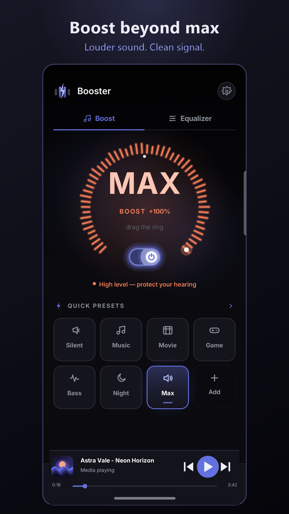
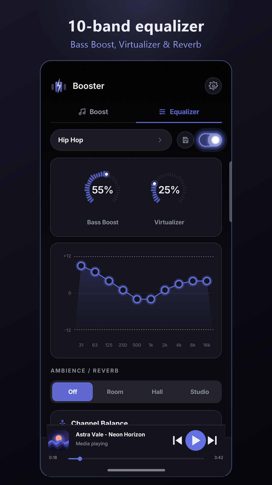

Booster pushes your volume past the system limit with clean, distortion-controlled gain — a limiter guards the end of the chain, so louder never means crackle.
Get it on Google Play
Most boosters crank one slider and let it distort. Booster splits the job the way hardware does: gain, limiter, and a real equalizer — each doing only its part.
Clean gain beyond 100% on speakers, wired headphones and Bluetooth. A built-in limiter sits at the end of the chain and catches peaks before they clip.
Ten bands with Bass, Surround and Reverb — fully independent of the boost. Works at any volume, even with the booster switched off.

Start the boost, switch to Spotify or YouTube — it stays active, with controls in a persistent notification.
An optional mini player detects what's playing and gives you play, pause and skip without leaving Booster.
Fall asleep to your music — Booster switches the boost off by itself when the timer runs out.
Clear warnings at high boost levels — because louder should always be your choice, not an accident.
Booster's one hard rule: with the boost and EQ turned off, it applies zero processing. No hidden "enhancement", no silent EQ curve.
Everything off → bit-for-bit system sound. The effects join the chain only when you raise the dial past 100% or switch the equalizer on — and leave it the moment you turn them off.
Booster collects nothing — no analytics, no ads, no personal data. Your settings live only on your phone, and every bit of audio processing happens on the device itself.